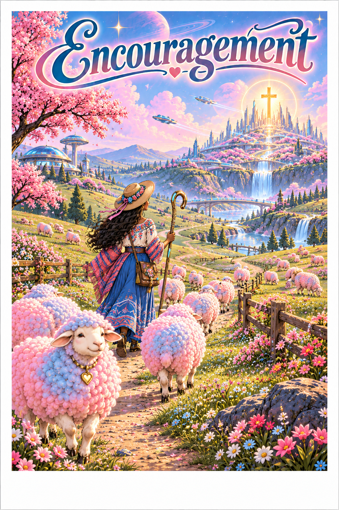
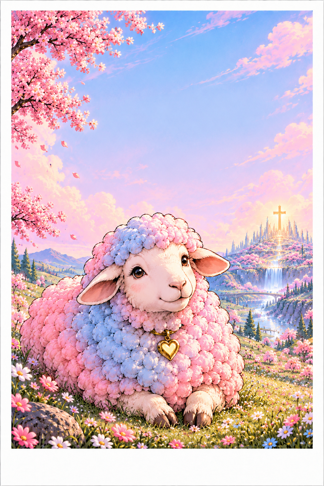
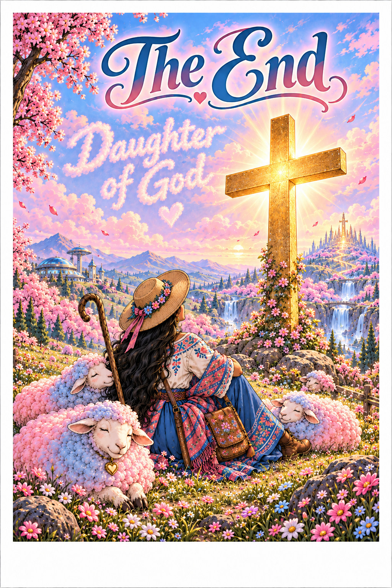

Hey Jennifer! I hope you're doing well and that life has been treating you kindly.
I just wanted to take a moment to send a little encouragement your way. I hope that wherever life takes you, you continue to find joy in the little things, strength in difficult moments, and peace in knowing that God is always with you.
May God continue to guide your steps, bless the work of your hands, and fill your heart with patience, wisdom, and compassion. Never underestimate the difference that a little kindness can make in someone's life or the impact you can have simply by being there for others.
Whatever challenges or opportunities lie ahead, I pray that you continue to grow in faith, find fulfillment in all that you do, and trust in the path God has prepared for you.